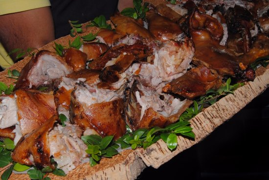

Ricetta maialetto arrosto

Descrizione ricetta
Secondo piatto della tradizione sarda, il maialino da latte (massimo 10 kg di peso) viene arrostito allo spiedo
Ingredienti
- 1 Maialino da latte
- Foglie di mirto
Passaggi ricetta
- Preparare il fuoco
- Tagliare a metà il maialetto
- Mettere il maialetto sul fuoco
- Servire il piatto caldo